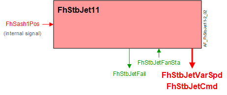

Fume hood stabilizing jet (FhStbJet11)
Overview
The application function "Fume hood stabilizing jet 11" (FhStbJet11) is used to monitor and control a fume hood stabilizing jet fan. The status of the stabilizing jet fan is shared with other AFs to determine exhaust volume setpoints and generate alarms. The stabilizing jet can be commanded by either the analog output FhStbJetVarSpd, or the binary output FhStbJetCmd (user choice during DXR configuration). The binary output FhStbJetFail represents the state of the stabilizing jet fan failure. The output is monitored by other modules to indicate a failure on the Operator Display Panel and adjust the fume hood exhaust airflow setpoint.
Main features:
- Stabilizing jet fan control (AO or BO)
- Stabilizing jet fan failure monitoring
Function

| Command or request (or related) |
| Notification of condition or status, or availability |
| Device mode |
| Interlock (internal signal, not a BACnet object; see Interlocks section for additional information) |


Stabilizing jet fan control: The stabilizing jet fan is turned on and off based on fume hood sash position, fume exhaust air volume flow. The fan is switched off when the analog output for fan speed control is set to 0. The fan is switched on when the analog output for fan speed control is set to the value provided by the hood manufacture.
Sash position control: The fan speed control output will be set to 0 when the sash position is less than SwiOffSshpFan. The fan speed control output will be set to FhStbJetVarSpd, when the sash position is greater than SwiOffSshpFan.
Exhaust air volume control: The fan speed control output will be set to 0 when the fume hood exhaust air volume falls below the value in SwiOffAflEhFan for longer than the time specified in DlyOffFanAirFl. The fan speed control output is set to FhStbJetVarSpd, when the fume hood exhaust airflow is greater than SwiOffAflEhFan plus HysAirFlEh.
Stabilizing jet fan monitoring: The stabilizing jet fan failure is a calculated binary value object.
A differential pressure switch is normally used to determine if the stabilizing jet fan is operating properly. The stabilizing jet fan failure will be off when the stabilizing jet fan is off or when the fan is turned on and the differential pressure switch closes before the alarm switch delay expires.
The stabilizing jet fan failure will be on when the fan is on, the alarm switch delay timer is expired, and the differential pressure switch is open.
Occasionally a differential pressure switch is not installed. The stabilizing jet alarm will always be off when the binary input for the differential pressure switch is not present.
Feature configuration
Feature selections for "Room HVAC coordination" are accessed via the Application configuration task in the Configuration component.
Feature (AF) | Feature description | Ref. |
|---|---|---|
Monitoring fume hood stabilizing jet fan failure | None/Active | ☑ |
Configuration
 Parameters
Parameters
Description | Parameter | Default value |
|---|---|---|
Setpoint for stabilizing jet fan speed | SpStbFanSpd | 42 [%] |
Switch-off sash position for stabilizing jet fan | SwiOffSshpFan | 4.0 [cm] |
Switch-on sash position for stabilizing jet fan | SwiOnSshpFan | 8.0 [cm] |
Switch-off area for stabilizing jet fan | SwiOffAreaFan | 0.06 [m2] |
Switch-on area for stabilizing jet fan | SwiOnAreaFan | 0.12 [m2] |
Switch-off point for exhaust air volume flow for stabilizing jet fan | SwiOffAflEhFan | 150 [m3/h] |
Hysteresis for exhaust air volume flow | HysAirFlEh | 40 [m3/h] |
Switch-off delay for stabilizing jet fan based on air volume flow | DlyOffFanAirFl | 10 [s] |
Switch-on time for stabilizing jet fan state before fan alarm | TiOnStbFanAlm | 15 [s] |
Length unit | LngtUnit | [cm] |
Air volume flow unit | AirFlUnit | [m3/h] |
Area unit | AreaUnit | [m2] |
Interface
Interface | Description | Type | Ref. | Owned by |
|---|---|---|---|---|
FhStbJetVarSpd | Fume hood stabilizing jet fan variable speed | AO | ◉ | Room segment / Field device |
FhStbJetCmd | Fume hood stabilizing jet fan command | BO | ◉ | Room segment / Field device |
FhStbJetFanSta | Fume hood stabilizing jet fan state | BI | ◉ | Room segment / Field device |
FhStbJetFail | Fume hood stabilizing jet fan failure | BCalcVal | ● | - |
FhStbJetFailm | Monitoring fume hood stabilizing jet fan failure | FtrSel | ● | - |
Engineering and commissioning
Optional.